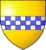

375557 Lady Margaret Stewart (Grevinna av Sutherland)
Grevinna. Blev högst 66 år.

Far:
Mor:
Född:
1373 Lochindorb castle, Badenoch, Scotland. [1]
Död:
1439 Trieve castle, Galloway, Wigtonshire, Scotland. [1]
Barn:
Personhistoria
1373
Födelse 1373 Lochindorb castle, Badenoch, Scotland
[1]
1439
Död 1439 Trieve castle, Galloway, Wigtonshire, Scotland
[1]
Källor
[1]
Mckay/Stevens genealogy pages